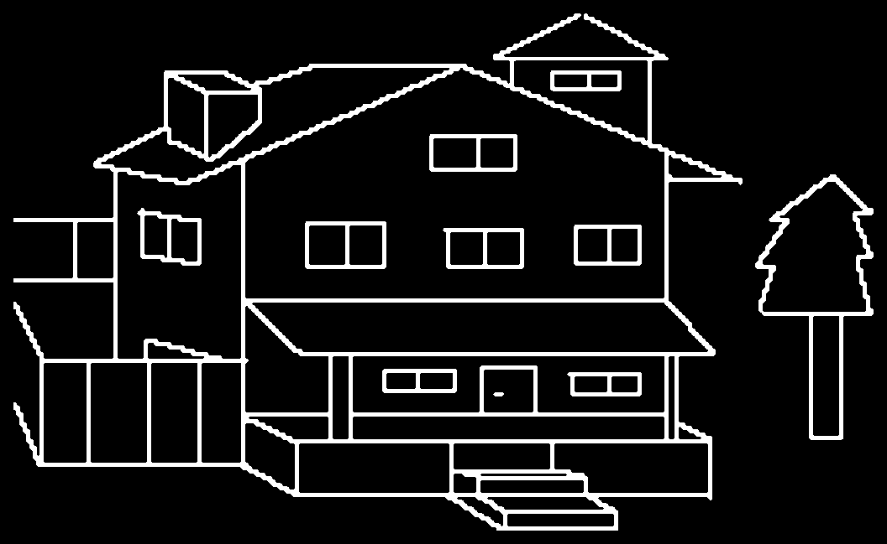

Caso 1 · A Casa Vitoriana · 1980

Sete estranhos. Um assassino.
O mistério de 1980 que muitos consideram o primeiro jogo de aventura com gráficos, reconstruído traço a traço. Sete pessoas. Uma casa. Descubra o assassino antes que chegue a sua vez.
Cider Studios · 2026